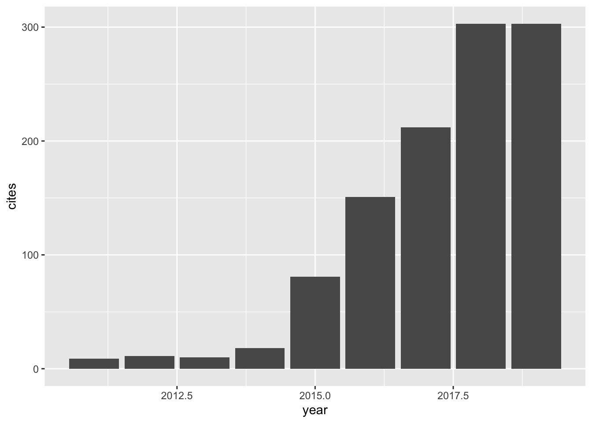
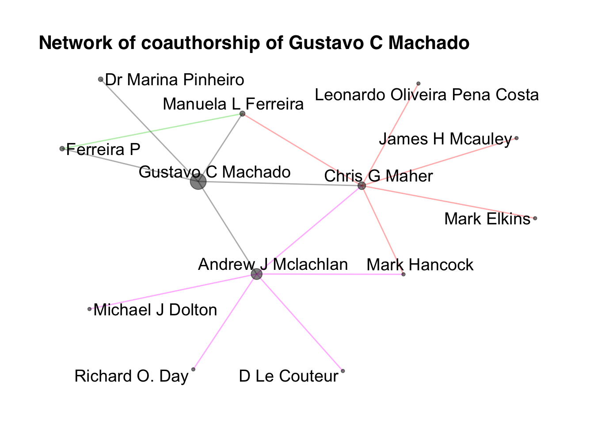

My research focuses on the effectiveness of contemporary interventions for musculoskeletal conditions, such as low back pain. I am also interested in implementation research and digital health to improve healthcare services and health outcomes. I am a physiotherapist and an NHMRC Early Career Fellow (PhD awarded on 21 June 2017) at the Institute for Musculoskeletal Health. Since 2010, I have published 41 peer-reviewed articles in 31 distinct journals. The work I led is published in top ranking general medical (e.g. BMJ) and specialist journals (e.g. Annals of the Rheumatic Diseases). My papers have been cited 1098 and a current h-index = 15. My work is impactful, my article in BMJ had over 130k downloads (Altmetric score: 1,083), and my research in Annals of the Rheumatic Diseases had more than 300 media mentions (Altmetric score: 949), including the cover of The Times UK and research news in BMJ.
###Citation history: 

My publications:
## title
## 1 Efficacy and safety of paracetamol for spinal pain and osteoarthritis: systematic review and meta-analysis of randomised placebo controlled trials
## 2 Factors defining care‐seeking in low back pain–A meta‐analysis of population based surveys
## 3 Paracetamol for low back pain
## 4 Symptoms of depression and risk of new episodes of low back pain: a systematic review and meta‐analysis
## 5 Non-steroidal anti-inflammatory drugs for spinal pain: a systematic review and meta-analysis
## 6 Dietary supplements for treating osteoarthritis: a systematic review and meta-analysis
## 7 Surgical options for lumbar spinal stenosis
## 8 Effectiveness of surgery for lumbar spinal stenosis: a systematic review and meta-analysis
## 9 Smartphone apps for the self-management of low back pain: A systematic review
## 10 The efficacy of conservative treatment of osteoporotic compression fractures on acute pain relief: a systematic review with meta-analysis
## 11 Are neck pain scales and questionnaires compatible with the international classification of functioning, disability and health? A systematic review
## 12 Is alcohol intake associated with low back pain? A systematic review of observational studies
## 13 Trends, complications, and costs for hospital admission and surgery for lumbar spinal stenosis
## 14 Inspiratory muscular weakness is most evident in chronic stroke survivors with lower walking speeds.
## 15 Patients with sciatica still experience pain and disability 5 years after surgery: A systematic review with meta‐analysis of cohort studies
## 16 Can recurrence after an acute episode of low back pain be predicted?
## 17 Paracetamol versus placebo for knee and hip osteoarthritis
## 18 Physiotherapy improves eating disorders and quality of life in bulimia and anorexia nervosa
## 19 Can obesity and physical activity predict outcomes of elective knee or hip surgery due to osteoarthritis? A meta-analysis of cohort studies
## 20 Transient physical and psychosocial activities increase the risk of nonpersistent and persistent low back pain: a case-crossover study with 12 months follow-up
## 21 Female pattern hair loss and androgen excess: a report from the multidisciplinary androgen excess and PCOS Committee
## 22 No clinically important benefits of surgery over rehabilitation for lumbar spinal stenosis (PEDro synthesis)
## 23 Implementation of an evidence-based model of care for low back pain in emergency departments: protocol for the Sydney Health Partners Emergency Department (SHaPED) trial
## 24 The ability to manage stairs for chronic stroke survivors improves with increases in physical activity levels
## 25 Geometric indexes of heart rate of variability identifies autonomic alterations in young patients with type 1 diabetes mellitus
## 26 Transcutaneous electric nerve stimulation (TENS) for acute low back pain: systematic review
## 27 Credibility, Accuracy, and Comprehensiveness of Internet-Based Information About Low Back Pain: A Systematic Review
## 28 Managing non‐serious low back pain in the emergency department: Time for a change?
## 29 A longitudinal study of the influence of comorbidities and lifestyle factors on low back pain in older men
## 30 Lack of efficacy of paracetamol (acetaminophen) for low back pain and osteoarthritis
## 31 Limited evidence for screening for serious pathologies using red flags in patients with low back pain presenting to the emergency department
## 32 Lower back pain app: an exercise programme for the management of low back pain
## 33 Clinician, patient and general public beliefs about diagnostic imaging for low back pain: protocol for a qualitative evidence synthesis
## 34 Surgical options for lumbar spinal stenosis
## 35 Paracetamol for low back pain
## 36 Sydney Health Partners Emergency Department (SHaPED) trial-Statistical Analysis Plan
## 37 Management of low back pain in Australian emergency departments
## 38 Barriers to participation in a placebo-surgical trial for lumbar spinal stenosis
## 39 Treatment Effect Sizes of Mechanical Diagnosis and Therapy for Pain and Disability in Patients With Low Back Pain: A Systematic Review
## 40 Early comprehensive physiotherapy after lumbar spine surgery (PEDro synthesis)
## 41 Authors’ reply to Adam and to Veal and Thompson
## author
## 1 GC Machado, CG Maher, PH Ferreira, MB Pinheiro, CWC Lin, RO Day, ...
## 2 ML Ferreira, G Machado, J Latimer, C Maher, PH Ferreira, RJ Smeets
## 3 BT Saragiotto, GC Machado, ML Ferreira, MB Pinheiro, C Abdel Shaheed, ...
## 4 MB Pinheiro, ML Ferreira, K Refshauge, JR Ordoñana, GC Machado, ...
## 5 GC Machado, CG Maher, PH Ferreira, RO Day, MB Pinheiro, ML Ferreira
## 6 X Liu, GC Machado, JP Eyles, V Ravi, DJ Hunter
## 7 GC Machado, PH Ferreira, RIJ Yoo, IA Harris, MB Pinheiro, BW Koes, ...
## 8 GC Machado, PH Ferreira, IA Harris, MB Pinheiro, BW Koes, M van Tulder, ...
## 9 GC Machado, MB Pinheiro, H Lee, OH Ahmed, P Hendrick, C Williams, ...
## 10 M Rzewuska, M Ferreira, AJ McLachlan, GC Machado, CG Maher
## 11 ML Ferreira, BM Borges, IL Rezende, LP Carvalho, LPS Soares, ...
## 12 PH Ferreira, MB Pinheiro, GC Machado, ML Ferreira
## 13 GC Machado, CG Maher, PH Ferreira, IA Harris, RA Deyo, D McKay, Q Li, ...
## 14 MB Pinheiro, JC Polese, CD Faria, GC Machado, VF Parreira, RR Britto, ...
## 15 GC Machado, AJ Witzleb, C Fritsch, CG Maher, PH Ferreira, ML Ferreira
## 16 GC Machado, CG Maher, PH Ferreira, J Latimer, BW Koes, D Steffens, ...
## 17 AO Leopoldino, GC Machado, PH Ferreira, MB Pinheiro, R Day, ...
## 18 GC Machado, ML Ferreira
## 19 D Pozzobon, PH Ferreira, FM Blyth, GC Machado, ML Ferreira
## 20 GC Machado, PH Ferreira, CG Maher, J Latimer, D Steffens, BW Koes, ...
## 21 E Carmina, R Azziz, W Bergfeld, HF Escobar-Morreale, W Futterweit, ...
## 22 GC Machado, ML Ferreira
## 23 GC Machado, B Richards, C Needs, R Buchbinder, IA Harris, K Howard, ...
## 24 MB Pinheiro, JC Polese, GC Machado, CDCM Faria, TL Hirochi, ...
## 25 NM Souza, CM Pastre, AKF Da Silva, A Fern, B Bernardo, F Marques, ...
## 26 J Binny, NLJ Wong, S Garga, CWC Lin, CG Maher, AJ McLachlan, ...
## 27 G Ferreira, AC Traeger, G Machado, M O'Keeffe, CG Maher
## 28 GC Machado, E Rogan, CG Maher
## 29 PCS Parreira, CG Maher, ML Ferreira, GC Machado, FM Blyth, ...
## 30 GC Machado, CG Maher, ML Ferreira
## 31 GE Ferreira, GC Machado, M Oliver, CG Maher
## 32 MB Pinheiro, GC Machado
## 33 AC Traeger, BJ Reed, DA O’Connor, TC Hoffmann, GC Machado, ...
## 34 PH Ferreira, RIJ Yoo, IA Harris, MB Pinheiro, BW Koes, MW van Tulder, ...
## 35 GC Machado, ML Ferreira, MB Pinheiro, CA Shaheed, CG Maher, ...
## 36 L Billot, D Coombs, GC Machado, C Maher
## 37 GE Ferreira, GC Machado, CA Shaheed, CWC Lin, C Needs, J Edwards, ...
## 38 DB Anderson, RJ Mobbs, J Eyles, SE Meyer, GC Machado, GA Davis, ...
## 39 MH Halliday, AN Garcia, AB Amorim, GC Machado, JA Hayden, E Pappas, ...
## 40 GC Machado, MB Pinheiro
## 41 GC Machado, CG Maher, ML Ferreira
## journal
## 1 BMJ
## 2 European Journal of Pain
## 3 Cochrane Database of Systematic Reviews, CD
## 4 Arthritis Care & Research
## 5 Annals of the rheumatic diseases
## 6 Br J Sports Med
## 7 Cochrane Database of Systematic Reviews
## 8 PloS One
## 9 Best Practice & Research Clinical Rheumatology
## 10 European Spine Journal
## 11 Disability and Rehabilitation
## 12 Manual Therapy
## 13 Spine
## 14 European Journal of Physical and Rehabilitation Medicine
## 15 European Journal of Pain
## 16 Physical therapy
## 17 Cochrane Database of Systematic Reviews
## 18 British Journal of Sports Medicine
## 19 BMJ open
## 20 The Spine Journal
## 21 The Journal of Clinical Endocrinology & Metabolism
## 22 British Journal of Sports Medicine
## 23 BMJ open
## 24 Journal of Novel Physiotherapies
## 25 Current Research: Cardiology
## 26 Scandinavian journal of pain
## 27 Journal of medical Internet research
## 28 Emergency Medicine Australasia
## 29 Pain
## 30 J Pioneer Med Sci
## 31 Emergency Medicine Australasia
## 32 Br J Sports Med
## 33 BMJ open
## 34 The Cochrane Database of Systematic Reviews
## 35 The Cochrane Database of Systematic Reviews
## 36 OSF Preprints
## 37 BMJ quality & safety, bmjqs-
## 38 Heliyon
## 39 journal of orthopaedic & sports physical therapy
## 40 British Journal of Sports Medicine
## 41 BMJ
## number cites year cid
## 1 350, h1225 361 2015 15794406071758937776
## 2 14 (7), 747.e1-7 124 2010 5811498763500559182
## 3 D012230 89 2016 17090385442427092588
## 4 67 (11), 1591-1603 81 2015 7229524738836431389
## 5 76 (7), 1269-1278 77 2017 2747790318919845856
## 6 52 (3), 167-175 61 2018 12946000259606069463
## 7 53 2016 6083420165728056413
## 8 10 (3), e0122800 51 2015 1484165539416488560
## 9 30 (6), 1098-1109 40 2016 5044705391646714267
## 10 24 (4), 702-714 35 2015 97579893743126364
## 11 32 (19), 1539-1546 32 2010 3567840577743094078
## 12 18 (3), 183-190 22 2013 10872682983262721801
## 13 42 (22), 1737-1743 21 2017 8100748717271241946
## 14 50 (3), 301-307 19 2014 12543577937105423349
## 15 20 (10), 1700-1709 18 2016 1973126208637694796
## 16 97 (9), 889-895 15 2017 9042920968718531078
## 17 10 2019 14150830393524686916
## 18 48 (20), 1519-20 10 2014 1945091656162027216
## 19 8 (2), e017689 9 2018 17280953216405395838
## 20 16 (12), 1445-1452 7 2016 5856127231771863741
## 21 104 (7), 2875-2891 5 2019 16662989221455473614,11599076778061026959
## 22 51 (6), 541-542 5 2017 2004084663354939834
## 23 8 (4), e019052 4 2018 18424613958836488727
## 24 3 (3), 1-4 4 2013 7545849511539077891
## 25 3 (2) 3 2016 9965812976152318713
## 26 19 (2), 225-233 2 2019 2985297214639248344
## 27 21 (5), e13357 2 2019 3842701594161435421
## 28 30 (2), 279-282 2 2018 2923669111465477438
## 29 158 (8), 1571-1576 2 2017 8924753735426033122
## 30 5 (4), 142-143 2 2015 2542590745914281654
## 31 30 (3), 436-437 1 2018 16255174146937224348
## 32 52 (8), 536-537 1 2018 10757663063130067633
## 33 8 (2), e019470 1 2018 8094756135946051984
## 34 2016 (11) 1 2016 9706916621382673590
## 35 2016 (6) 1 2016 4916159389423847894
## 36 0 2019 <NA>
## 37 -2019-009383 0 2019 <NA>
## 38 5 (5), e01683 0 2019 <NA>
## 39 49 (4), 219-229 0 2019 <NA>
## 40 52 (2), 96-97 0 2018 <NA>
## 41 350, h2221 0 2015 <NA>
## pubid Journal
## 1 _FxGoFyzp5QC CA-A CANCER JOURNAL FOR CLINICIANS
## 2 u5HHmVD_uO8C EUROPEAN JOURNAL OF PAIN
## 3 7wO8s98CvbsC Cochrane Database of Systematic Reviews
## 4 UebtZRa9Y70C ARTHRITIS CARE & RESEARCH
## 5 jU7OWUQzBzMC ANNALS OF THE RHEUMATIC DISEASES
## 6 WC9gN4BGCRcC <NA>
## 7 7H_MAutzIkAC Cochrane Database of Systematic Reviews
## 8 LkGwnXOMwfcC PLoS One
## 9 hsZV8lGYWTMC BEST PRACTICE & RESEARCH IN CLINICAL RHEUMATOLOGY
## 10 ufrVoPGSRksC EUROPEAN SPINE JOURNAL
## 11 u-x6o8ySG0sC DISABILITY AND REHABILITATION
## 12 9yKSN-GCB0IC MANUAL THERAPY
## 13 yxmsSjX2EkcC SPINE
## 14 qjMakFHDy7sC European Journal of Physical and Rehabilitation Medicine
## 15 WHdLCjDvYFkC EUROPEAN JOURNAL OF PAIN
## 16 3NQIlFlcGxIC PHYSICAL THERAPY
## 17 KNjnJ3z-R6IC Cochrane Database of Systematic Reviews
## 18 zYLM7Y9cAGgC BRITISH JOURNAL OF SPORTS MEDICINE
## 19 MAUkC_7iAq8C BMJ Open
## 20 WC23djZS0W4C <NA>
## 21 kWvqk_afx_IC JOURNAL OF CLINICAL ENDOCRINOLOGY & METABOLISM
## 22 wKETBy42zhYC BRITISH JOURNAL OF SPORTS MEDICINE
## 23 OBSaB-F7qqsC BMJ Open
## 24 2osOgNQ5qMEC <NA>
## 25 SjuI4pbJlxcC <NA>
## 26 VN7nJs4JPk0C SCANDINAVIAN JOURNAL OF GASTROENTEROLOGY
## 27 3bvyWxjaHKcC JOURNAL OF MEDICAL INTERNET RESEARCH
## 28 jFemdcug13IC Emergency Medicine Australasia
## 29 Br1UauaknNIC PAIN
## 30 5nxA0vEk-isC <NA>
## 31 HGTzPopzzJcC Emergency Medicine Australasia
## 32 AXkvAH5U_nMC <NA>
## 33 Dem6FJhTUoYC BMJ Open
## 34 FiDNX6EVdGUC Cochrane Database of Systematic Reviews
## 35 1DsIQWDZLl8C Cochrane Database of Systematic Reviews
## 36 w1MjKQ0l0TYC <NA>
## 37 -nhnvRiOwuoC <NA>
## 38 F2UWTTQJPOcC <NA>
## 39 ce2CqMG-AY4C JOURNAL OF ORTHOPAEDIC & SPORTS PHYSICAL THERAPY
## 40 rHJHxKgnXwkC BRITISH JOURNAL OF SPORTS MEDICINE
## 41 Se3iqnhoufwC CA-A CANCER JOURNAL FOR CLINICIANS
## Cites ImpactFactor Eigenfactor
## 1 28839 244.585 0.06603
## 2 6537 2.991 0.01032
## 3 62332 6.754 0.16726
## 4 15360 4.149 0.03019
## 5 41994 12.350 0.08102
## 6 NA NA NA
## 7 62332 6.754 0.16726
## 8 582877 2.766 1.86235
## 9 3388 3.198 0.00553
## 10 15242 2.634 0.02305
## 11 8543 2.042 0.01230
## 12 3907 2.330 0.00490
## 13 46984 2.792 0.03505
## 14 1504 2.208 0.00327
## 15 6537 2.991 0.01032
## 16 11858 2.587 0.00887
## 17 62332 6.754 0.16726
## 18 17956 7.867 0.03072
## 19 18367 2.413 0.08470
## 20 NA NA NA
## 21 78047 5.789 0.10469
## 22 17956 7.867 0.03072
## 23 18367 2.413 0.08470
## 24 NA NA NA
## 25 NA NA NA
## 26 8972 2.629 0.01033
## 27 10875 4.671 0.02741
## 28 1482 1.353 0.00302
## 29 36132 5.559 0.03800
## 30 NA NA NA
## 31 1482 1.353 0.00302
## 32 NA NA NA
## 33 18367 2.413 0.08470
## 34 62332 6.754 0.16726
## 35 62332 6.754 0.16726
## 36 NA NA NA
## 37 NA NA NA
## 38 NA NA NA
## 39 6612 3.090 0.00680
## 40 17956 7.867 0.03072
## 41 28839 244.585 0.06603